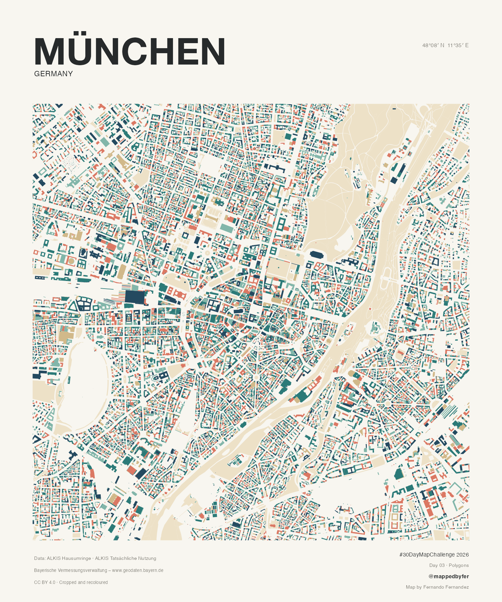

Munich — Cadastral Mosaic

Munich, shaped by its buildings.
29,601 cadastral footprints trace a 5 × 5 km view of central Munich around Marienplatz. Teal, petrol blue, coral, mint and sand bring out the geometry of urban blocks, while the Isar and parks form a quieter layer in cream.

The idea
Explore the city's form through its individual building footprints: dense blocks, courtyards and larger structures contrast with parks and water. The palette is decorative; colours do not encode building age, use, height or value. The composition draws inspiration from Topi Tjukanov's QGIS polygon styles, while preserving the cadastral footprint shapes.
How it was made
The official Upper Bavaria footprint archive was filtered to Munich municipality, retaining 316,178 footprint records. A 5 × 5 km square centred on Marienplatz was clipped in ETRS89 / UTM 32N (EPSG:25832), leaving 29,601 records. A stable hash assigns each footprint to one of five decorative colour groups. A separate cadastral land-use layer adds 53 water polygons and 477 park and green-area polygons beneath the buildings. All displayed geometries passed validity checks. The selected poster was rendered in R at 3000 × 3600 pixels.
Sources & limitations
Data: Bayerische Vermessungsverwaltung – www.geodaten.bayern.de. Footprints: ALKIS Hausumringe. Water and parks: ALKIS Tatsächliche Nutzung. Both datasets are used under CC BY 4.0; geometries were cropped and recoloured. Downloaded 2 November 2026; archive files are dated 1 October 2026 for footprints and 15 October 2026 for land use. These are not per-building construction dates. Footprints include certain other structures and do not represent dwellings. The poster shows only central Munich. Parks follow cadastral park and green-area classes, which do not include every vegetated surface.